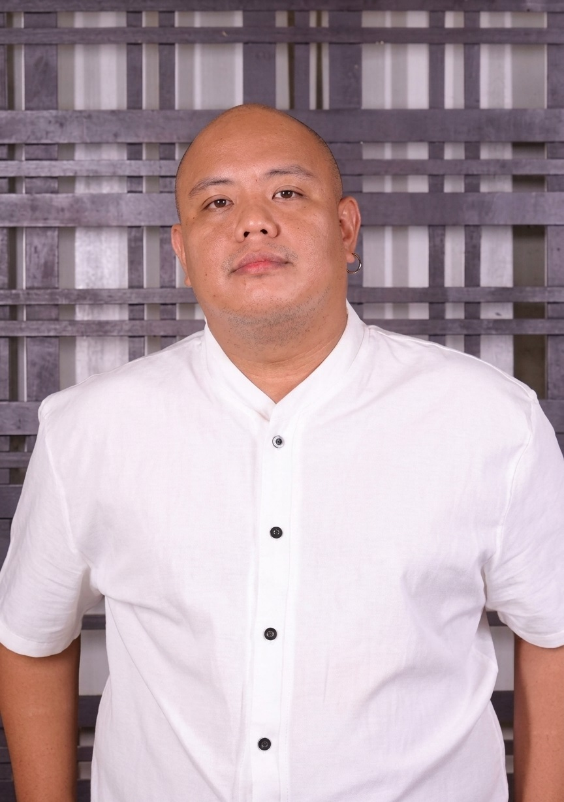

Hello, I'm
I bring extensive experience in legal intake, client communication, appointment management, and administrative support. I meet demanding deadlines through a strong work ethic and a commitment to accuracy and professionalism.
View My Experience Get In Touch
I am an adaptable professional based in Bacolod City with a background spanning legal intake and administration, customer service, internal auditing, and healthcare. Since 2024 I have worked with law firms handling tenant rights, estate planning, probate, and trust administration. I am skilled at gathering client information, screening matters, documenting case details accurately, and keeping attorneys' calendars organized. Before entering the legal field, I built a strong foundation in quality assurance and customer service through roles in the BPO industry and as a licensed radiologic technologist.
Lead qualification, preliminary case screening, and matter eligibility evaluation for estate, probate, trust, and tenant rights matters.
Scheduling consultations, managing attorney calendars and court appearances, and handling rescheduling and follow-ups.
Concise intake notes, document preparation and review, and creating court templates through Clio Draft.
Professional phone, email, and written communication. Escalates legal questions appropriately to attorneys.
Internal audit scope, findings, and recommendations presented to senior management, plus SLA and KPI monitoring.
Organizing case files and cloud drives so that all documents remain accurate and up to date.
Riverside College Inc., Bacolod City | Graduated May 2012
I am open to opportunities where I can use my skills in legal support, intake, and customer service, and help your team succeed.
nickonneescaran@gmail.com | Contact me on LinkedIn | Chat on WhatsApp | Bacolod City, Negros Occidental, Philippines